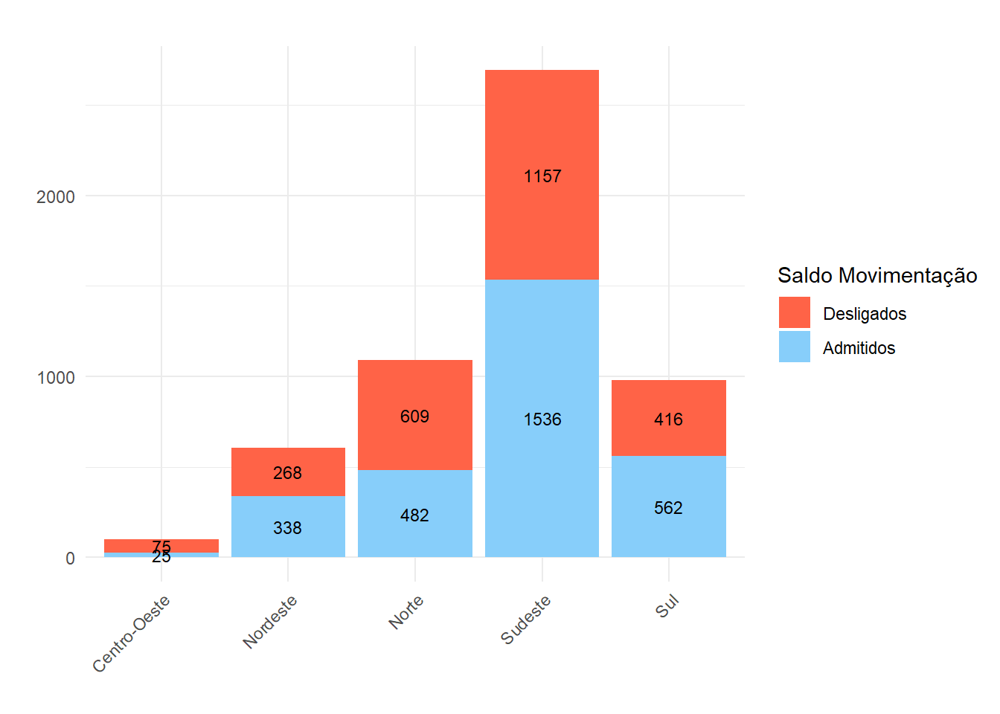
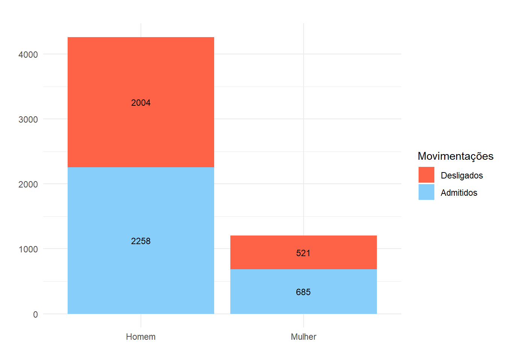

Mercado de Trabalho Portuário
Agosto 2 de 2024
1 Dinâmica do Mercado de Trabalho Portuário no Brasil
O número de admitidos no mês foi de 2943, enquanto o de desligados foi de 2525, o que resultou em um saldo (diferença entre admitidos e desligados ) de 418 postos de trabalho no setor portuário no país.
Ao considerar as regiões do país, observa-se que o desempenho no Sudeste foi de 379 vínculos de saldo, resultado de 1536 admitidos e 1157 desligados. No Nordeste, o saldo total foi de 70 vínculos, com 338 admitidos e 268 desligados.
Na região Norte, o saldo foi de -127 vínculos, com 482 admitidos e 609 desligados. Já na região Sul, o resultado foi de 146 vínculos, sendo 562 admitidos e 416 desligados. Por fim, a região Centro-Oeste apresentou um saldo de -50 vínculos, com 25 admitidos e 75 desligados.
Ao considerar o Gráfico 1, verifica-se as respectivas movimentações de admitidos e desligados por região.
Ao analisar o desempenho por unidade da federação, o Gráfico 2 mostra o desempenho de cada estado no mês.

Os gráficos acima apresentam a distribuição de movimentações de vínculos em diferentes unidades federativas e em suas respectivas regiões. A análise permite identificar variações na quantidade de movimentações, evidenciando tanto aumentos quanto reduções em cada estado e região. Esse panorama facilita a compreensão do desempenho regional no mês.
O Gráfico 3, por sua vez, apresenta a distribuição da mediana salarial mensal para admitidos e desligados nas diferentes regiões do Brasil. Os boxplots permitem visualizar a variação dos salários dentro de cada grupo, destacando a mediana, os quartis e os possíveis valores atípicos. Essa análise comparativa entre admitidos e desligados em cada região oferece uma perspectiva das diferenças salariais, ajudando a identificar tendências regionais.

O Gráfico 4 apresenta a distribuição de admissões e desligamentos no mercado de trabalho pelo recorte de sexo. As barras empilhadas indicam o número total de movimentações, permitindo uma comparação visual entre os grupos de homens e mulheres. Essa visualização facilita a análise das dinâmicas de contratação e desligamento, possibilitando a identificação de tendências de inclusão ou exclusão no mercado de trabalho de acordo com o sexo de cada trabalhador.

O Gráfico 5, por sua vez, mostra a distribuição de admissões e desligamentos no mercado de trabalho, segmentada por diferentes níveis de escolaridade, no Brasil. As barras empilhadas mostram o total de movimentações para cada nível educacional, permitindo uma análise comparativa sobre como o grau de instrução influencia a dinâmica de contratação e desligamento, o que pode indicar padrões de empregabilidade na força de trabalho.

O Gráfico 6 apresenta as 10 ocupações que registraram o maior saldo positivo de movimentações no mês no país, indicando um maior número de admissões em relação aos desligamentos. Cada barra representa uma ocupação e está segmentada em admissões e desligamentos, permitindo uma análise clara das profissões com maior demanda. Isso auxilia na identificação de tendências de crescimento e setores com maior contratação.

O Gráfico 7, por sua vez, mostra as 10 (dez) ocupações com o maior saldo negativo de movimentações no mês, mostrando profissões onde os desligamentos superaram as admissões. Essa informação é útil para identificar áreas de instabilidade e potencial necessidade de intervenções ou requalificação ou eventuais crises conjunturais.

2 Mercado de Trabalho Portuário no Maranhão
A movimentação de empregos portuários e aquaviários no estado do Maranhão no mês resultou no saldo de -11 vagas, uma variação de,
O Gráfico 8 mostra a evolução da movimentação e o respectivo saldo de vínculos no estado, mostrando a tendência geral dos processos de admissão e demissão.

A Tabela 1 apresenta um resumo das movimentações de admissões e desligamentos no estado do Maranhão ao longo dos últimos 12 meses. Para cada mês, é possível observar a quantidade de desligamentos e admissões, bem como o saldo resultante dessas movimentações. Valores positivos no saldo indicam que houve mais admissões do que desligamentos, sugerindo um crescimento no número de vínculos empregatícios. Já valores negativos revelam que os desligamentos superaram as admissões, refletindo uma redução líquida de postos de trabalho no período. Essa visão mensal permite um acompanhamento das flutuações do mercado de trabalho no estado.
Por sua vez, observa-se no Gráfico 9 o desempenho do estado do Maranhão no quesito salarial.
No Gráfico 10 estão os dados das movimentações por sexo para o mês vigente no Maranhão.
Ao observar as movimentações por grau de escolaridade, tem-se os valores conforme se observa no Gráfico 11.

O Gráfico 12 mostra as 10 (dez) ocupações com saldo positivo no mês no estado do Maranhão.

O Gráfico 13, por sua vez, mostra as 10 (dez) ocupações com saldo negativo no mês no Maranhão.